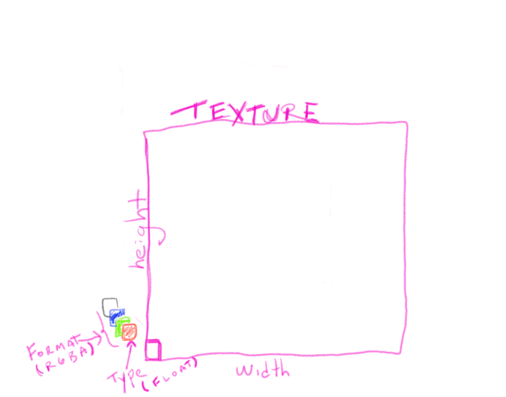

<!doctype html>
<html>
	<head>
		<meta charset="utf-8">
		<meta name="viewport" content="width=device-width, initial-scale=1.0, maximum-scale=1.0, user-scalable=no">

		<title>Textures</title>

		<link rel="stylesheet" href="../css/reveal.css">
		<link rel="stylesheet" href="../css/theme/black.css">

		<!-- Theme used for syntax highlighting of code -->
		<link rel="stylesheet" href="../lib/css/zenburn.css">

		<!-- Printing and PDF exports -->
		<script>
			var link = document.createElement( 'link' );
			link.rel = 'stylesheet';
			link.type = 'text/css';
			link.href = window.location.search.match( /print-pdf/gi ) ? '../css/print/pdf.css' : '../css/print/paper.css';
			document.getElementsByTagName( 'head' )[0].appendChild( link );
		</script>

	</head>
	<body>
		<script src="../lib/js/head.min.js"></script>
		<script src="../js/ext/reveal.js"></script>
		<div class="reveal">
			<div class="slides">

			<section data-markdown>
				<script type="text/template">
				### Textures
				
				A 2D buffer of 4D data.  
				[Actually, a 2D or 3D buffer of 1D,2D,3D or 4D data]
				
				
				</script>
			</section>

			<section data-markdown>
				<script type="text/template">
				### Textures

				* What are dimensions?  (width, height)  
				* What is internal format on GPU? (e.g. `GL_RGBA` )  
				* What is format of data on CPU? (e.g. `GL_RGBA` )  
				* What is type of data?  (e.g. `GL_UNSIGNED_BYTE` or `GL_FLOAT`)   
				* What is the data? (image, video, NULL, velocity field, etc)

				</script>
			</section>

			<section data-markdown>
				<script type="text/template">
				### Textures: OpenGL calls
				
				* Create: `glGenTextures` (or `glCreateTexture`)
				* Bind: `glBindTexture(GL_TEXTURE_2D, texId)` 
					- or `glBindTexture(GL_TEXTURE_CUBE_MAP, texID)
				* Allocate: `glTexImage2D` (target, internal format, dim, format, type, data or NULL)
				* Fill: `glTexSubImage2D` (target, format, data)
				* Parameters: `glTexParameteri` (see [this](https://www.khronos.org/opengles/sdk/docs/man/xhtml/glTexParameter.xml))
				* LOD: `glGenerateMipMaps`

				</script>
			</section>			

			<section data-markdown>
				<script type="text/template">
				### Textures: 

				On CPU:

					glBindTexture(GL_TEXTURE_2D, texId)


				On GPU:

					  uniform sampler2D texture; // NEW!!
					  varying vec2 vuv;

					  void main() {
					    gl_FragColor = texture2D(texture, vuv);
					  }

				</script>
			</section>			

<section data-markdown>
<script type="text/template">
### Textures: Tips

* If loading images, use power-of-two dimensions if possible
(allows for automatic level-of-detail calculations with
`glGenerateMipMap`)

* Always set texture parameters for MAG and MIN filters (use GL_LINEAR or other)
before generating mipmaps.

		glTexParameteri(GL_TEXTURE_2D, GL_TEXTURE_MAG_FILTER, GL_LINEAR);
		glTexParameteri(GL_TEXTURE_2D, GL_TEXTURE_MIN_FILTER, GL_LINEAR);
		glGenerateMipMap(GL_TEXTURE_2D); 


</script>
</section>	

			<section data-markdown>
				<script type="text/template">
				### Textures: Multiple Sampler2Ds

				* use `glUniform1i` to assign glsl sampler2D an id
				* use `glActiveTexture` to activate that id
				* use `glBindTexture` to bind texture to sampler

				</script>
			</section>	

			<section data-markdown>
				<script type="text/template">
				### Textures: Multiple Sampler2Ds

				On CPU:

					glUniform1i( glGetUniformLocation(shaderId, "textureA"), 0);
					glUniform1i( glGetUniformLocation(shaderId, "textureB"), 1);

					glActiveTexture(GL_TEXTURE0);
					glBindTexture(GL_TEXTURE_2D, texA);

					glActiveTexture(GL_TEXTURE0+1);
					glBindTexture(GL_TEXTURE_2D, texB);

				On GPU:

					  uniform sampler2D textureA;
					  uniform sampler2D textureB;
					  
					  varying vec2 vuv;

					  void main() {
					    gl_FragColor = texture2D(textureA, vuv) + texture2D(textureB, vuv);
					  }

				</script>
			</section>	

<section data-markdown>
<script type="text/template">
### Textures: Cubemaps
* Used for Environment Maps and Skyboxes (and AlloSphere!)
* Generate and bind `GL_TEXTURE_CUBE_MAP` target
* Load six textures, one for each face (Right-handed, so positive Z is behind you!)
			
		for (int i=0;i<6;++i){
			glTexImage2D(GL_TEXTURE_CUBE_MAP_POSITIVE_X+i, ...etc... )
		}

* Set Texture Parameters

		glTexParameteri(GL_TEXTURE_CUBE_MAP, GL_TEXTURE_WRAP_S, GL_CLAMP_TO_EDGE);
		glTexParameteri(GL_TEXTURE_CUBE_MAP, GL_TEXTURE_WRAP_T, GL_CLAMP_TO_EDGE);	
		glTexParameteri(GL_TEXTURE_CUBE_MAP, GL_TEXTURE_WRAP_R, GL_CLAMP_TO_EDGE);	
		glTexParameteri(GL_TEXTURE_CUBE_MAP, GL_TEXTURE_MAG_FILTER, GL_LINEAR);
		glTexParameteri(GL_TEXTURE_CUBE_MAP, GL_TEXTURE_MIN_FILTER, GL_LINEAR);
		glGenerateMipMap(GL_TEXTURE_CUBE_MAP); 
</script>
</section>	

<section data-markdown>
<script type="text/template">
### Textures: Cubemaps

Look up bound cubemap texture using a 3D direction, instead of a 2D uv coordinate.

Vertex Shader:
		
		attribute vec3 position;
		varying vec3 vTexDir;
		...
		void main(){
			...
			vTexDir = normalize(position);
			...
		}

Fragment Shader:

		uniform samplerCube cubemap;
		varying vec3 vTexDir;

		void main() {
			gl_FragColor = textureCube(cubemap, vTexDir);
		}

</script>
</section>	

			</div>

		</div>


		<script>
			// More info https://github.com/hakimel/reveal.js#configuration
			Reveal.initialize({
				history: true,

				math: {
				    mathjax: 'https://cdn.mathjax.org/mathjax/latest/MathJax.js',
				    config: 'TeX-AMS_HTML-full'  // See http://docs.mathjax.org/en/latest/config-files.html
				},


				// More info https://github.com/hakimel/reveal.js#dependencies
				dependencies: [
					{ src: '../plugin/math/math.js', async: true },
					{ src: '../plugin/markdown/marked.js' },
					{ src: '../plugin/markdown/markdown.js' },
					{ src: '../plugin/notes/notes.js', async: true },
					{ src: '../plugin/highlight/highlight.js', async: true, callback: function() { hljs.initHighlightingOnLoad(); } }
				]
			});
		</script>
	</body>
</html>	